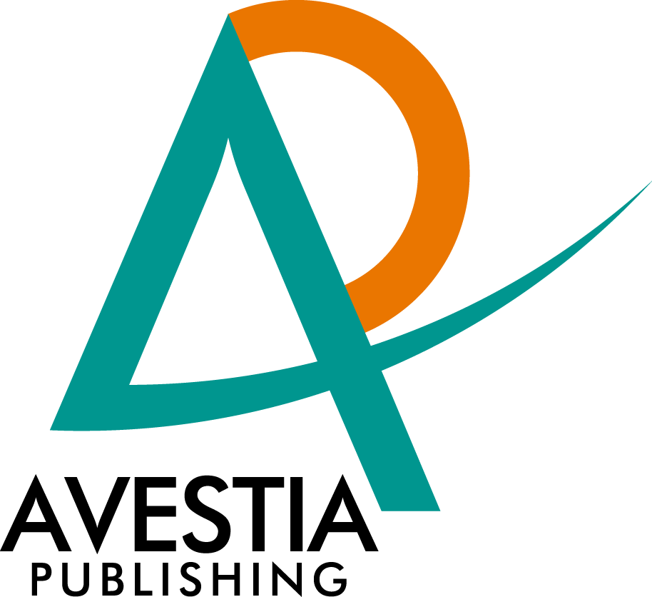

<div class="unit unit-s-1 unit-m-1-4-1 unit-l-1-4-1">
  <div class="unit-spacer content">
    <p class="body">The International Conference on New Trends in Transport Phenomena (NTTP) will be renamed to the International Conference on Fluid Flow, Heat and Mass Transfer (FFHMT) to accommodate a more specific conference theme.</p>

    <p class="body">The goal of is to gather scholars from all over the world to present advances in the fields of transport phenomena and to foster an environment conducive to exchanging ideas and information. This conference will also provide an ideal environment to develop new collaborations and meet experts on the fundamentals, applications, and products of the mentioned fields.</p>

    <p class="body">FFHMT covers researches related to heat, momentum, and mass transfer. All accepted and presented papers will be published in the conference proceedings. Furthermore, selected papers from the conference will be submitted for possible publication in the following journals from Avestia Publishing (publication fees may apply):</p>

	<p class="body indent"><a href="" class="body-link">Journal of Fluid Flow, Heat and Mass Transfer</a></p>

    <p class="body"><b>FFHMT</b> is an acronym for <b>F</b>luid <b>F</b>low, <b>H</b>eat and <b>M</b>ass <b>T</b>ransfer</p>

<p class="body">To view NTTP 2014 website, please visit <a href="" class="body-link">http://NTTPconference.com</a></p>

<div class="sponsor">
	<a href=""></a><br>

	<a href=""></a>

	<a href=""></a>
</div>
  </div>
  </div>